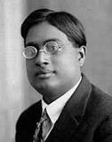

Shri Satyendra Nath Bose

Satyendra Nath Bose (1894 - 1974) was an Indian physicist and mathematician who made many contributions to the field of mathematics, including
Bose was born in Calcutta (now Kolkata) and received his undergraduate and graduate degrees from the University of Calcutta. He taught at the University of Dacca and then at Calcutta. In 1945, the government of India awarded him the Padma Vibhushan, the second highest civilian honor.
Bose-Einstien Statistics
Bose's work on quantum mechanics in the early 1920s laid the foundation for Bose-Einstein statistics, which is named after him
Bose-Einstein statistics is a theory in quantum statistics that describes how a group of identical, non-interacting particles can occupy a set of discrete energy states. It's one of two ways that particles can occupy energy states, and it applies to particles that don't follow the Pauli exclusion principle
Planck's Radiation law
Bose discovered a new method for deriving Planck's radiation law.
A black-body absorbs and emits radiation. The emitted radiation is described by the law of Planck's law, which states that the higher the temperature of a body , the more radiation it emits at every wavelength. The maximum intensity of the radiation depends on the body's temperature.
Theory of Bose-Einstein Condensate
Bose's work also contributed to the theory of the Bose-Einstein condensate.
The Bose-Einstein condensate (BEC) is a state of matter that occurs when a large number of bosons, like atoms, are cooled to near absolute zero and condense into a single quantum state. This phenomenon was predicted by Albert Einstein in 1924–1925, and experimentally observed in 1995 by Eric Cornell, Carl Wieman, and Wolfgang Ketterle.
Collaboration with Albert Einstein
Bose collaborated with Einstein on a theory about the gas-like properties of electromagnetic radiation.
Published scientific papers
Bose published many scientific papers between 1918 and 1956, which contributed to statistical mechanics, X-ray crystallography, thermoluminescence, and unified field theory
#############################################################################################